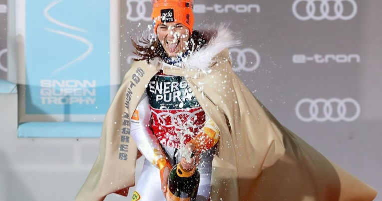

Novosti
Filip Zubčić: Cro Cop je rekao da je ovakav život robija, ali ja u njemu uživam
NAJBOLJI hrvatski skijaš u prva dva mjeseca sezone ima neobične rezultate za svoje standarde. More ...

Vlhova treći put zaredom slavila na Sljemenu: "Bila je ovo velika borba s uvjetima"
SLOVAKINJA Petra Vlhova pokazala je da joj je Crveni spust nešto najbliže domaćem terenu i već treću godinu zaredom zasjela je na sljemenski tron, navukla plašt i stavila krunu sljemenske Snježne kraljice. More ...
Rezultat karijere sjajne Leone Popović
ZAVRŠILA je tradicionalna utrka Snježna kraljica u ženskom slalomu. Gledali smo jako teške uvjete. Snažan vjetar raznosio je lišće po stazi, a najveći problem bio je kod prvih vrata. More ...